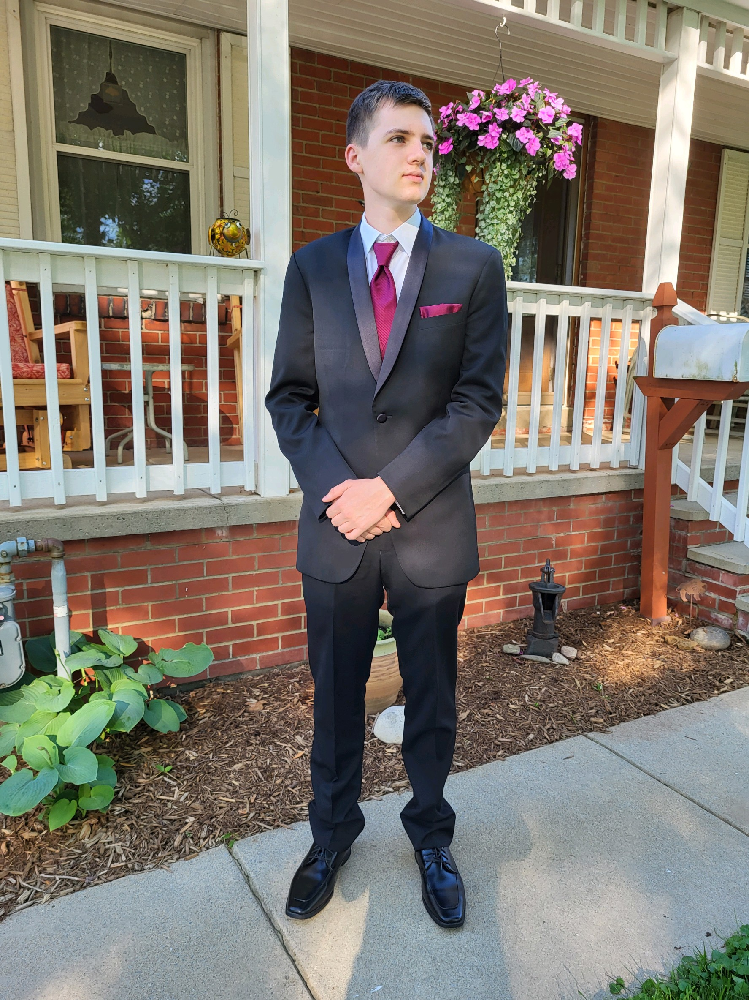

Ryan Dunlavey

- A little about me:
- Hamburg, NY
- 18 years old
- Mom is a graduate of RIT
- Classes that I am in:
- Motivation & Wellness
- Academic Strategies
- MATH-173
- ISTE-140
- GCIS-123
I love to perform music, as well as listen to it. I play trumpet and euphonium. Jazz is in my top 3 favorite genres. I also love to play video games in my spare time.